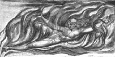

Kükrer Rintrah ve savurur ateşlerini kasvetli havada,
Derinlerde sürüklenir aç bulutlar.
Uysaldı eskiden ve adil insan,
Tuttu ölüm vadisi boyunca
Tehlikeli bir patikanın yolunu.
Güller dikilir çalıların arasına,
Ve kıraç fundalıkta
Vızıldar bal arıları.
O tehlikeli patika yapıldı sonra,
Ve bir ırmak ve bir pınar
Her uçuruma, her mezara,
Ve kızıl balçıkla sıvandı
Ağarmış kemiklerin üzeri.
Kötü adam terk edene dek kolaylığın patikalarını,
Tehlikeli yollarda yürümek ve sürmek uğruna
Çorak iklimlere adil insanı.
Az bulunur bir tevazuuyla
Sinsice ilerliyor şimdi yılan.
Ve aslanların dolaştığı diyarlarda
Öfkeden kuduruyor adil insan.
Kükrer Rintrah ve savurur ateşlerini kasvetli havada,
Derinlerde sürüklenir aç bulutlar.

Yeni bir cennet başlıyor ve otuz üç yıl geçmişken doğalı, Sonsuz Cehennem tekrar canlanıyor. İşte bak! Swedenborg mezarın üzerine tüneyen Melektir; yapıtları, katlanmış keten giysilerdir. Şimdi, Edom’un hükümranlığı ve Adem’in Cennete geri dönme zamanıdır. Bakınız İşaya, Bab XXXIV ve XXXV.
Karşıtlıklar yoksa ilerleme olmaz. Çekim ve İtim, Akıl ve Enerji, Aşk ve Nefret, İnsan varoluşu için gereklidir.
Bu karşıtlıklardan, dinin İyi ve Kötü dediği ortaya çıkar. İyi edilgendir, Akıl’a boyun eğer. Kötü, Enerji’den doğan ve etkin olandır.
İyi Cennettir. Kötü Cehennem.